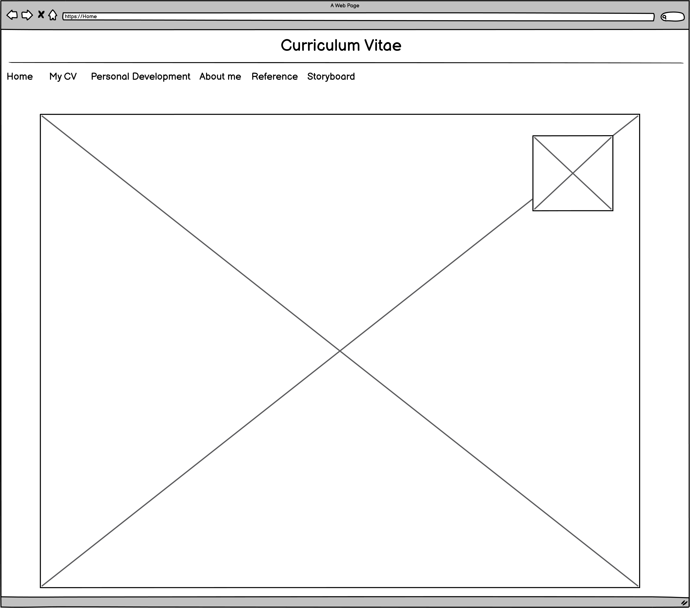
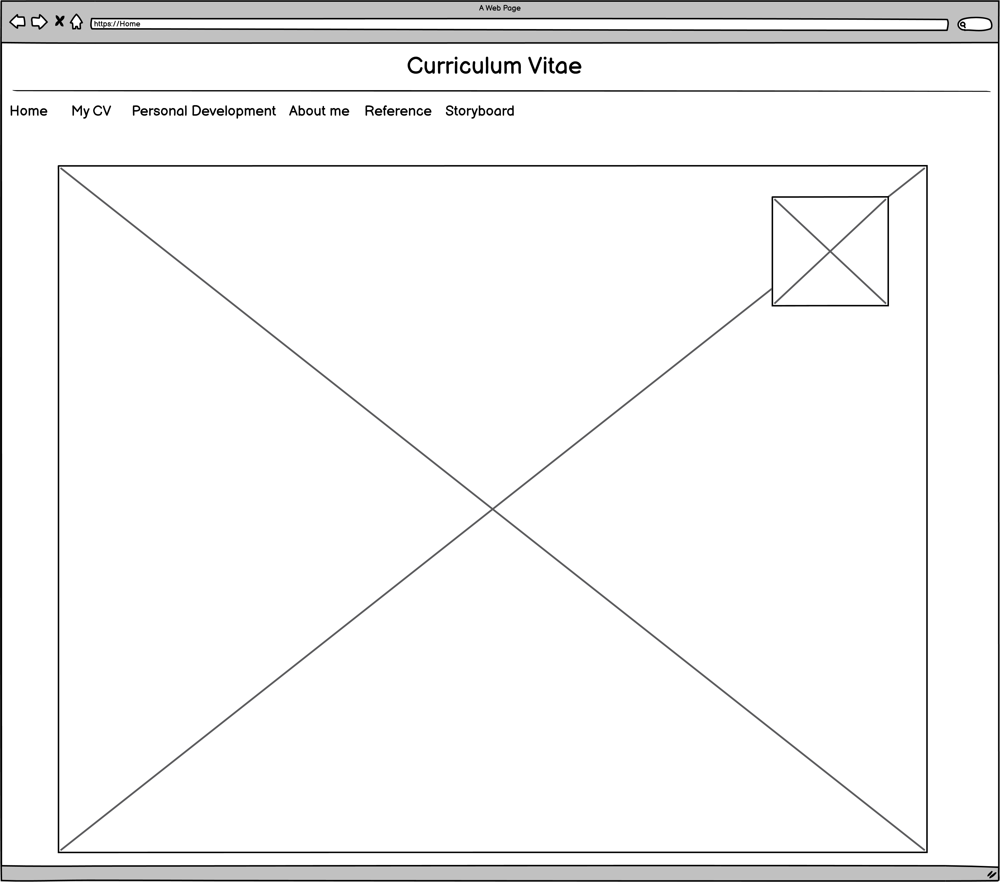

Website Theme
The main colours used within the creation of the website sre that of yellow and blue.
Yellow was used for the front an dstoryboard page because it represents feelings of
happiness,
positivity and optimism which is the feelings I wish to invoke on first
exposure to the website.
Blue was used for the remainder of the pages ehich focused
and me as a person beacuse it represents stability,
harmony, peace, calm and trust
which is what i myslef beieve I represent and would like to give that impression to
the user.
Target Audience
I'm mostly focused on my demographic of yung adoloscence which can be seen with the
use of language
when speaking of myself to be more relatable to my peers as if I am
speaking to them casually.
Features
Don't expect too much. This webite is more information focused than asthetic or a multitude
of features.
Pictures, email capabilities and bokkmarks and the most stand out fetures this
website offers.
 
